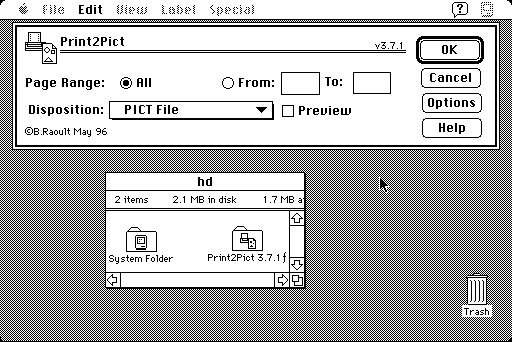

Download
print2pict371.zip (221K) Print2Pict 3.7.1 repackaged into a zipped hfs disk image and checksum file. The disk image can be mounted with Mini vMac.
print2pict371.hqx (303K) Print2Pict 3.7.1 in the original format.
copyright: Baudouin Raoult
mod date: May 15, 1996
license: shareware
A "printer driver that previews and saves printed pages to PICT files or the clipboard."

Download earlier version
print2pict3.6.zip (176K) Print2Pict 3.6 repackaged into a zipped hfs disk image and checksum file. The disk image can be mounted with Mini vMac.
print2pict3.6.sit.hqx (242K) Print2Pict 3.6 in the original format.
If you find these downloads useful, please consider helping the Gryphel Project, which hosts them.
Here are the md5 checksums for the downloads, signed with Gryphel Key 5:
--------- GRY SIGNED TEXT --------- 533fc24c89fb1fff4c3f17b11de80810 print2pict371.zip f7da776cbf7946abb356d57463981b15 print2pict371.hqx e676c68d4a799d55960662a2551be994 print2pict3.6.zip 8e05cd68ca3fe8ed13119dc1c761cd56 print2pict3.6.sit.hqx ------- BEGIN GRY SIGNATURE ------- Gry/4Xa8CFcUzxdN/GiZAniUrfvR2He4IsB/DjTV9qHfiDw2zSZ/oF1XGMWur4U2 VTiFlIRfwSUdshlDkOwdjYRS7XSN8ycICvldJeH7bcojFLx7NZ1acsQxuF0SPyIh JYw7KGwdWftcAe+lXQart478BYZI7cVLUpBjolFHwLP2hP7NkCf97c4av5h5SSp7 -------- END GRY SIGNATURE --------